Literatur:
(Balzert
1998-2001)
(Rupp
und Queins 2012)
(Scheibl)
(Erler
2004)
(Die
nachfolgende Darstellung orientiert sich an (Rupp und Queins 2012))
Aktivitätendiagramme dienen der detaillierten Visualisierung von Daten- und Kontrollflüssen innerhalb einer Aktivität (z.B. Geschäftsprozess). Dabei geht es um die Modellierung komplexer Abläufe unter Berücksichtigung von Nebenläufigkeit und alternativen Entscheidungswegen. Durch den wählbaren Detaillierungsgrad stellen Aktivitätendiagramme eine Alternative zu PAPs oder Struktogrammen (Nassi-Shneiderman-Diagramme) dar.
Die wichtigsten Elemente von Aktivitätendiagramme sind
Aktivitäten
(können geschachtelt werden)
Aktionen
Objektknoten
Elemente
zur Steuerung des Kontrollflusses
Kanten zum Verbinden der
Elemente und Visualisierung des Kontrollflusses
Im Folgenden werden die Aktivitätendiagramme anhand von Beispielen erläutert.
Unter einer Aktion wird ein elementarer Vorgang bzw. Einzelschritt verstanden der nicht weiter zerlegt werden kann bzw. auf dem gewählten Abstraktionsniveau nicht weiter zerlegt werden soll. Eine Aktion wird durch ein oder mehrere Ereignis(se) ausgelöst und beendet sich selbst (Repräsentation eines bestimmtes Verhalten in einem System). Eine Folge von Aktionen, welche zu einem bestimmten Ergebnis führen, werden mit dem Begriff Aktivität zusammengefasst.
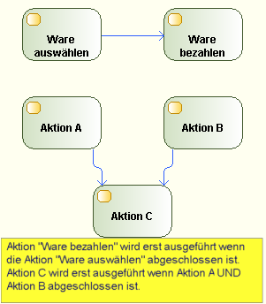
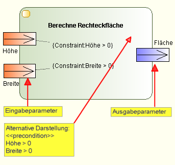
Objektknoten dienen der Modellierung von Daten und Werten die beim Ablauf einer Aktivität transportiert werden. Bei der Umsetzung eines Modells mittels einer Programmiersprache sind die Objektknoten Stellvertreter von Variablen, Konstanten und Objekten von Klassen.
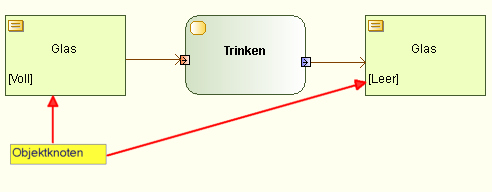
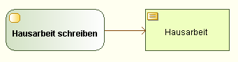
Als
alternative Darstellung, bei dem die Objektknoten als Eingabe bzw.
Ausgabeparameter einer Aktion hervorgehoben wird, kann die
Pin-Notation verwendet werden:
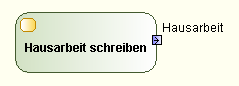
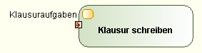
Wenn der Objektfluss fortwährend in oder aus einer Aktion fließt (auch wenn die Aktion gerade aktiv ist), dann handelt es sich bei dem Objektfluss um einen Datenstrom. Dies kann durch ein schwarzes Kästchen als Pin oder ein ausgefülltes Pfeilende symbolisiert werden. Alternativ kann man die ein/ausgehenden Kanten mit dem Vermerk „{stream}“ versehen. Bei einem Eingabestrom wird mit der Abarbeitung einer Aktion begonnen, sobald die ersten Daten an der Aktion angekommen sind. Es wird also nicht gewartet, bis alle Eingabeparameter eingegangen sind.
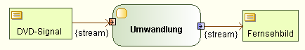
Üblicherweise nimmt ein Objektknoten genau ein Token auf, welches dann sofort an die nachfolgende Aktion weitergereicht wird – es sei denn die nachfolgende Aktion ist gerade aktiv. In diesem Fall staut sich das Token im Datenknoten und der Datenknoten kann kein weiteres Token aufnehmen, bis die nachfolgende Aktion abgeschlossen ist. In der UML kann die Anzahl der Token, die ein Objektknoten aufnehmen kann bevor sich ein „Rückwärtsstau“ einstellt, angegeben werden. Im folgenden Beispiel (in Anlehnung an (Rupp und Queins 2012)) können bis zu 3 Cocktailgläser gemixt werden falls die Aktion „Cocktail trinken“ aktiv ist. Nach dem 3. Cocktail kann aber kein Cocktail mehr gemixt werden, es sei denn es wird wieder ein Cocktail zum trinken entnommen (Verhinderung dass die Cocktails zu warm werden).
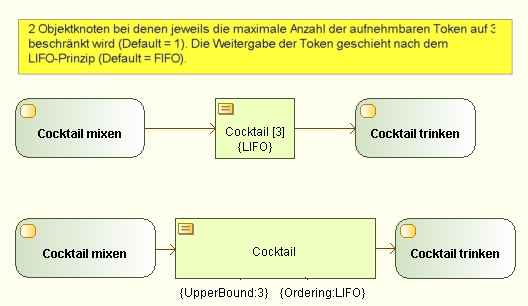
Möchte man die obig beschriebene Pufferfunktion des Objektknotens besonders betonen, so verwendet man Objektknoten die mit dem Stereotyp „<<centralBuffer>>“ (oder einem speziellen Symbol) gekennzeichnet sind.
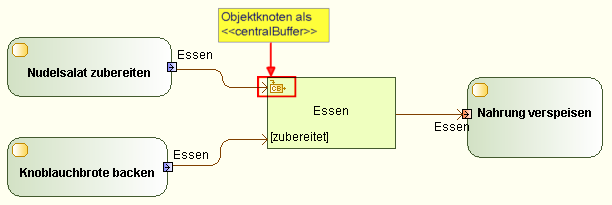
Möchte man einen Objektknotens als Datenspeicher verwenden der alle eingehende Token und deren mitgeführte Daten persistent speichert, sodass die Token (und deren Daten) jederzeit beliebig oft ausgelesen werden können, so verwendet man Objektknoten die mit dem Stereotyp „<<datastore>>“ (oder einem speziellen Symbol) gekennzeichnet sind. Wenn Token in den Datenspeicher einfließen, die schon im Datenspeicher vorhanden sind, so werden die Daten des Tokens aktualisiert.
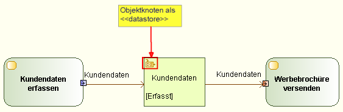
Beispiel:
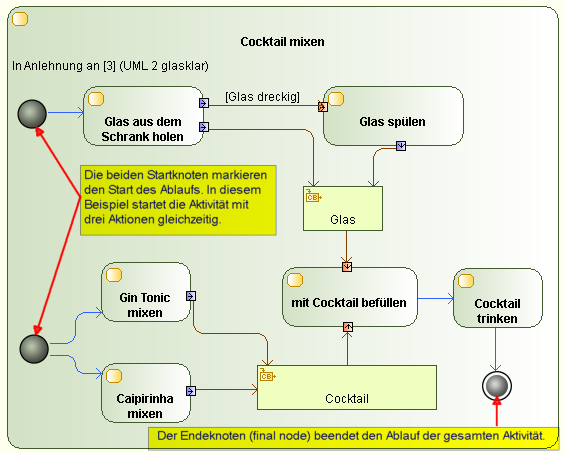
Über gewichteten Kanten kann festgelegt werden, wieviele Token am Ursprung einer Kante angesammelt sein müssen, damit der Ablauf über die Kante geht (Defaultwert=1).
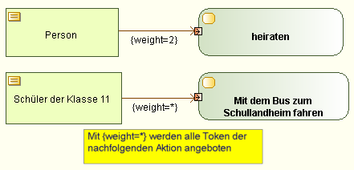
Mit dem Schlüsselwort „<<multicast>>“ kann ein Objektknoten mehrere Objektinstanzen über eine ausgehende Kante verbreiten. Mit dem Schlüsselwort „<<multireceive>>“ kann ein Objektknoten mehrere Objektinstanzen über eine eingehende Kante entgegennehmen.
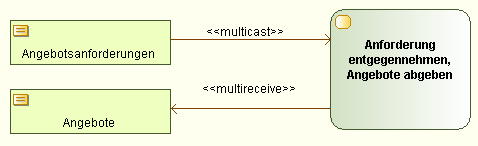
Aktivitätendiagramme werden mit zunehmender Anzahl von Aktionen immer unübersichtlicher. Sprungmarken ermöglichen die Unterbrechung eines Ablaufes und Weiterführung an einer anderen Stelle:
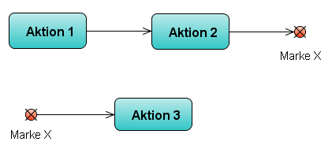
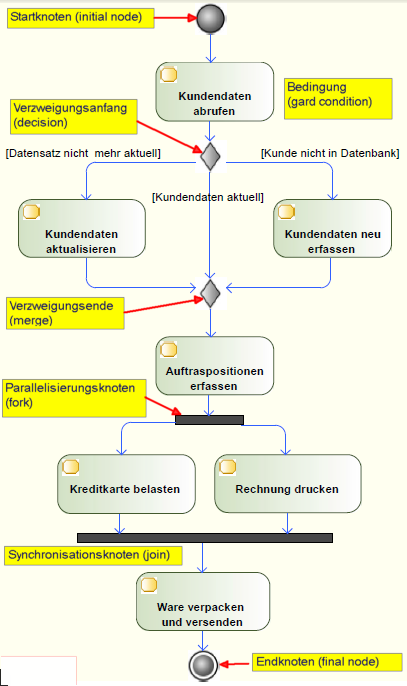
Im „Verbindungsknoten“ (merge=Raute) findet keine Synchronisation statt (sobald ein Token anliegt, wird dieser an den nachfolgenden Knoten weitergereicht). Falls mehrere Token gleichzeitig anliegen (ist im obigen Beispiel nicht möglich), werden diese in nicht spezifizierter Reihenfolge serialisiert. Im Gegensatz dazu sendet der „Synchronisationsknoten“ (join) erst dann ein Token, wenn an allen Eingängen ein Token anliegt. In unserem Fall bedeutet dies, dass erst dann die Ware verpackt und versendet wird, wenn die Aktion „Kreditkarte belasten“ und „Rechnung drucken“ abgeschlossen ist. Allerdings kann diese „join condition“ auch geändert werden:
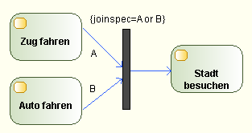
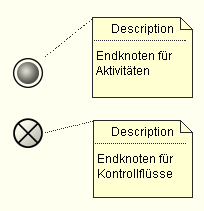
Aktivitätendiagramme können auch nebenläufige Aktionen beinhalten (im obigen Beispiel war dies „Rechnung drucken“ und „Kreditkarte belasten“). Solche nebenläufige Aktionen können unabhängig von der gesamten Aktivität terminieren. In diesem Fall wird das Symbol eines Endeknotens für Kontrollflüsse verwendet.
Beispiel:
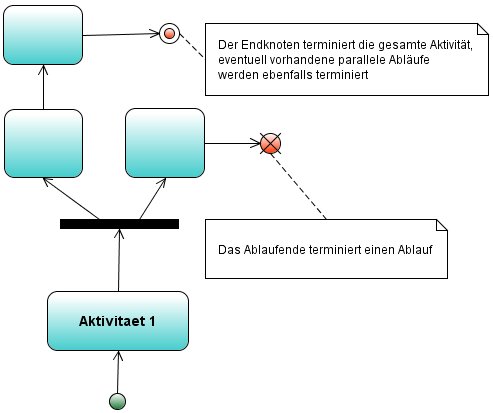
Aktionen die ein Signal senden bzw. empfangen werden als SendSignalAction und AcceptSignalAction bezeichnet. Diese speziellen Aktionen haben eigene Symbole. Beispiel zur Illustration (aus (Rupp und Queins 2012)):
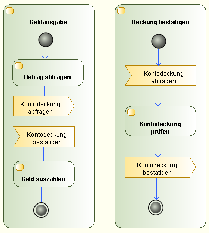
Bisher wurden die Fälle betrachtet in denen eine Aktion durch eine andere Aktion oder durch das Empfangen eines Signales ausgelöst wurde. Eine Aktion kann aber auch durch ein Zeitereignis ausgelöst werden:
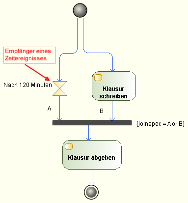
Beispiel:
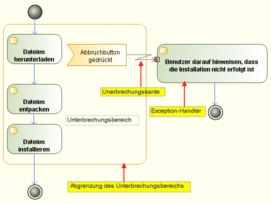
Mittels Partitionen (swimm lanes) können Aktivitätendiagramme in Aktivitätsbereiche strukturiert werden (Organisationseinheiten, Kostenstellen, Orte, Rollen, ...):
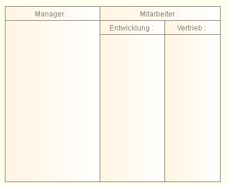
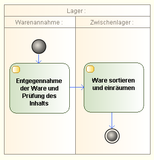
Strukturierte Knoten dienen der Gruppierung von Modellelementen. Entweder um diese zu strukturieren oder um zu visualisieren, dass die gruppierten Modellelemente nach außen als eine Aktion aufgefasst werden können.
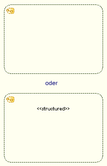
Mit einem strukturierten Knoten kann auch modelliert werden, dass ein gruppierter Bereich erst vollständig abgearbeitet sein muss, bevor anliegende Token diesen betreten dürfen (Schlüsselwort synchronized in Java):
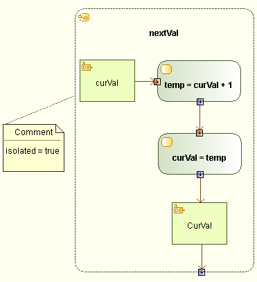
Bei einem Schleifenknoten handelt es sich um einen strukturierten Knoten mit maximal drei Unterbereichen: einem Initialisierungsbereich (setup section bzw. for section), einem Testbereich (while section) und einem Ausführungsbereich (do section).
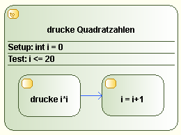
Beispiel in Anlehnung an (Rupp und Queins 2012):
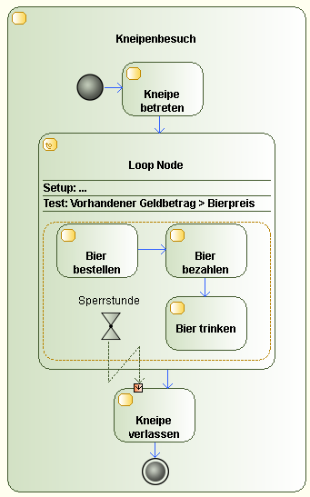
Bei komplexen, verschachtelten Entscheidungen wird die Darstellung des Informationsflusses mittels dem Raute-Symbol (Verzweigungsknoten) schnell unübersichtlich. Aus diesem Grund gibt es für verschachtelte Verzweigungen eine alternative Darstellung mittels einem Entscheidungsknoten (conditional node).
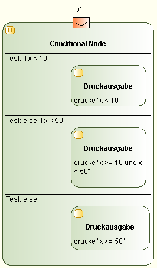